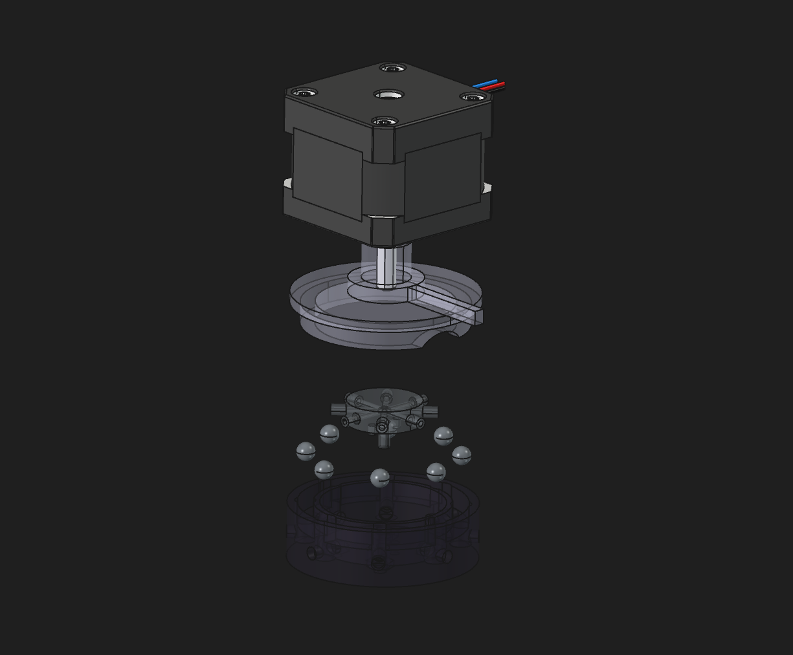

Full CAD Freeze: The Whole System Comes Together
July 29, 2026 • 5 min read

This is the milestone we've been driving toward: the complete Wavie assembly is modeled and fit-checked end to end. Three tiers — optics up top, fluidics in the middle, electronics at the base — all packed into a single sealed tower barely taller than a banana.
The six-slot reagent path routes through a purpose-built rotary selector valve into the optical measurement cell, where a single bidirectional peristaltic pump meters every fluid. Above it sits the multi-wavelength optical bench. Every subsystem was designed in-house and laid out to occupy the smallest footprint we could physically achieve.
With geometry frozen, we're moving from CAD into the first full physical build — validating each subsystem on the bench before committing to the beta batch.


The Spectrophotometer Bench Comes Together

At the heart of every colorimetric test is a multi-wavelength optical bench: calibrated LEDs illuminate the sample cell and a precision light sensor reads absorbance directly. The sensor board and illumination are mounted to the cell, and firmware is now driving each wavelength independently for dark-count and reference reads.
Pump & Rotary Valve Validated


The fluid path is proven. We ran a gravimetric calibration on the peristaltic pump to meter to hundredths of a milliliter, and homed the eight-position rotary valve — six reagents, sample, and waste — off a single limit switch. One pump, one valve, every path.
Coming Up
Colorimetric Calibration & Accuracy Testing
Per-wavelength references and dark counts with DI water, then early accuracy data for alkalinity, calcium, and magnesium against manual test kits.
Scheduling Engine & Test Automation
User-configurable test intervals, queue management, and how the system recovers if a run is interrupted mid-cycle.
Enclosure Sealing & Thermal Management
Final enclosure geometry, material choices, and managing heat in a sealed reef-environment housing.
First Full Beta Build
Walking through the first complete beta unit assembly — what worked, what needed rework, and what changes before the batch run.
Join the Beta
Follow these updates as a beta member. Your $500 deposit locks in your unit and your place in the community.
Reserve Your Spot — $500Secure checkout via Stripe
Latest Hardware Renders